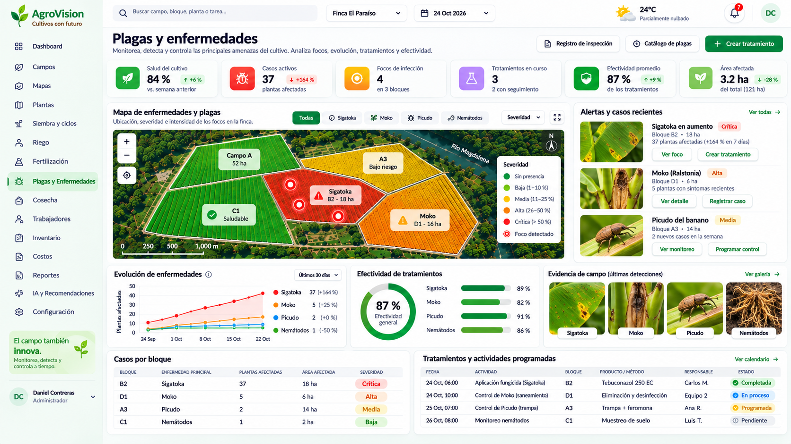
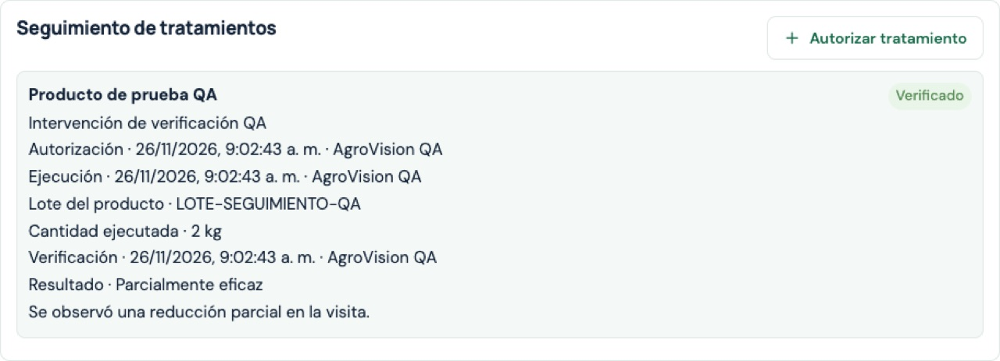
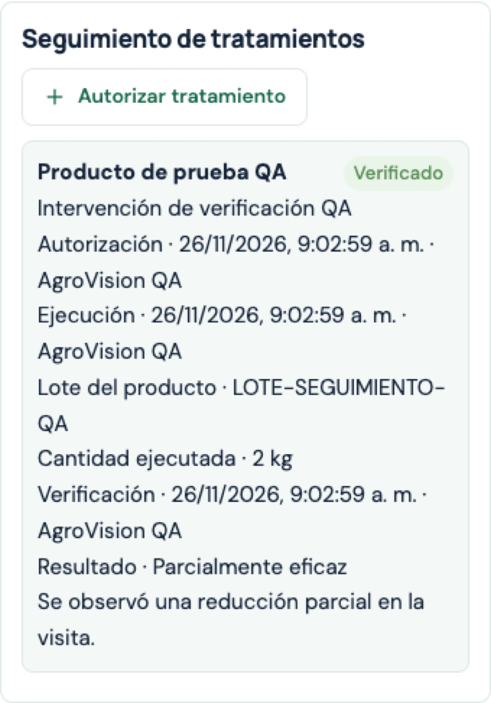

El módulo Plagas y enfermedades reúne la vigilancia fitosanitaria por bloque y surco, la revisión de hallazgos y el historial de intervenciones. El trabajo preventivo programado se describe en Medidas preventivas.


Requerimientos funcionales y estado
| ID | Requerimiento | Estado y funcionalidad disponible |
|---|---|---|
| SAN-01 | Consultar y administrar el catálogo de problemas fitosanitarios. | Implementado. Desde Configuración se crean problemas por código y se gestionan nombre, categoría y estado. El catálogo de la API es compartido entre fincas. La desactivación conserva el historial. |
| SAN-02 | Registrar una inspección con trazabilidad de la observación. | Implementado. Se guarda el problema sospechado, fecha, responsable, bloque, surco opcional, muestra inspeccionada, plantas afectadas, área, síntomas, severidad, método y próxima visita. |
| SAN-03 | Validar los conteos y mostrar por separado incidencia, severidad y área. | Implementado. La incidencia se calcula como afectadas / inspeccionadas × 100. Se valida la relación de conteos, el área en hectáreas y la coherencia del surco con el bloque. |
| SAN-04 | Revisar el diagnóstico y registrar el estado del hallazgo. | Implementado. La inspección comienza sospechada. Una persona autorizada puede confirmar, descartar o resolver el hallazgo, con justificación, fecha, autor y control de versión. |
| SAN-05 | Programar una próxima visita y conservar el vínculo entre inspecciones. | Implementado. El historial señala visitas vencidas. El seguimiento conserva el problema y la ubicación y permite navegar entre inspección original y posteriores. |
| SAN-06 | Registrar tratamientos y conservar su evidencia. | Implementado. Se registra fecha, descripción, autor, producto y cantidad/unidad opcionales. Se pueden relacionar referencias de imagen, documento o video, y cargar fotos JPEG/PNG con vista previa y descarga autenticada. |
| SAN-07 | Consultar, filtrar y exportar inspecciones y tratamientos. | Implementado. Hay filtros de bloque, problema y fechas, CSV del historial filtrado y CSV de tratamientos con sus referencias. También están disponibles las observaciones y los tratamientos del historial anterior. |
| SAN-08 | Anular una inspección con motivo y preservar su trazabilidad. | Implementado. La anulación requiere permiso, motivo y versión vigente. Se conservan el registro, los tratamientos y la evidencia y se bloquea la incorporación de nuevos adjuntos. |
| SAN-09 | Visualizar el estado sanitario por bloque. | Parcial. El mapa muestra hallazgos activos, ausencia de hallazgos activos o ausencia de evaluación reciente. Falta ubicar el foco exacto y mostrar su evolución territorial. |
| SAN-11 | Registrar el resultado de laboratorio asociado a una inspección. | Implementado para el registro de referencia de muestra, laboratorio, fechas, resultado, notas y referencia del informe. La cadena de custodia y la carga del documento quedan pendientes. |
| SAN-15 | Programar el monitoreo periódico y registrar umbrales de revisión. | Implementado. Monitoreo permite crear un plan por bloque y problema, editar el calendario y el umbral, pausar y reanudar. Las visitas actualizan el calendario. Las alertas conservan la incidencia, el umbral aplicado, la inspección de origen y la decisión técnica. |
| SAN-16 | Aprobar, registrar y verificar una intervención. | Implementado. En el detalle de la inspección se registran los estados Autorizado, Pendiente de verificación y Verificado, los responsables y las fechas. Si se autorizó un producto, la ejecución exige su lote. La verificación conserva resultado y observaciones. |
| SAN-17 | Corregir observaciones históricas con trazabilidad. | Implementado. El historial conserva autor original, ubicación, fecha, adjuntos y referencia anterior. Cada corrección guarda motivo, editor, fecha, versión y valores previos y posteriores. |
Pantalla de inspecciones · Acciones del detalle · API y reglas de inspección · Criterios de las guías agronómicas
Monitoreo periódico y alertas
Desde Plagas y enfermedades → Monitoreo, el administrador, supervisor o agrónomo crea un plan para un bloque y un problema activo del catálogo. Indica una fecha de inicio, una frecuencia de 1 a 365 días y, si corresponde, un umbral de incidencia de 0 a 100 %. El personal de la finca puede consultar la agenda y registrar una visita con el bloque y el problema precargados.
La fecha inicial queda pendiente hasta registrar una visita. Después se muestra el siguiente intervalo calculado desde el inicio del plan, tomando la última inspección no anulada del bloque y problema. También cuentan las inspecciones que especifican un surco de ese bloque. Las fechas del plan usan UTC. Pausar suspende el vencimiento visible y la emisión de nuevas alertas.
Al guardar una inspección cuya incidencia iguala o supera el umbral de un plan vigente, se abre una alerta interna con los valores de esa medición. Editar un umbral solo afecta futuras alertas. Un rol agronómico puede abrir la inspección de origen y guardar una decisión técnica con fecha, autor y control de versión. La alerta se conserva si se anula la inspección y muestra su condición. Las alertas quedan en la pestaña Monitoreo.
Pantalla de monitoreo · API de planes y alertas · Migración V28
Seguimiento de tratamientos
Un administrador, supervisor o agrónomo autoriza la intervención desde el detalle de la inspección. Puede registrar un producto en la autorización.
Un integrante de la finca registra la ejecución. Cuando se aplica un producto, elige su lote de inventario e indica la cantidad usada. La unidad corresponde al producto del lote. La ejecución descuenta el saldo, registra el gasto con el costo unitario del lote y aparece en Tratamientos realizados. Desde el mismo detalle se pueden asociar fotos y referencias.
Un rol agronómico verifica el resultado como Eficaz, Parcialmente eficaz o Sin efecto observado y deja observaciones. El sistema conserva los responsables y las fechas de cada etapa.
El alta directa de tratamientos aplica el mismo descuento y registro de gasto cuando se utiliza un producto. Las intervenciones sin insumos se registran como actividades técnicas. La anulación de la inspección conserva en el historial la aplicación realizada y sus movimientos.
Pantalla de seguimiento · API de seguimiento · Migración V29




Resultados de laboratorio
En Inspecciones → Ver detalle → Resultados de laboratorio un administrador, supervisor o agrónomo registra la referencia de muestra, laboratorio, fecha de toma, fecha de resultado y el resultado Confirmado, No detectado o No concluyente. Puede añadir notas y una referencia al informe. Se conserva el autor y la fecha de registro de cada resultado.
Los resultados se consultan desde la inspección original. Quedan disponibles después de anularla y el sistema deja de aceptar nuevos resultados en esa inspección. La evaluación de campo se gestiona desde su propio formulario.
API de resultados · Migración V34
Corrección de observaciones históricas
En Historial anterior y tratamientos → Ver actividad → Editar observación histórica, los roles agronómicos pueden corregir el problema, la severidad, los síntomas o las notas. Un motivo es obligatorio. El Historial de cambios muestra qué cambió, quién lo corrigió y cuándo, con los valores de antes y después.
La corrección conserva el tipo de actividad, autor original, ubicación, fecha y evidencias de la observación. Las actividades con revisiones quedan protegidas contra el borrado desde el historial. El control de versión rechaza una corrección sobre datos desactualizados.
API de edición histórica · Migración V35
Funcionalidades verificadas
Laboratorio y observaciones históricas
| Prueba automatizada | Comprobaciones | Resultado del 26 de noviembre de 2026 |
|---|---|---|
| API de laboratorio | Vincular el resultado y su autor con la inspección, validar fechas y permisos, rechazar la reutilización del identificador con otros datos, comprobar aislamiento entre fincas y conservar la consulta después de anular. | 3 de 3 aprobadas con Gradle y H2. |
| Persistencia de laboratorio | Aplicar las migraciones, guardar fechas y UUID nativos, recuperar el mismo registro al repetir la solicitud y mantener el historial tras anular. | 1 de 1 aprobada con Gradle y PostGIS. |
| API de observaciones históricas | Conservar metadatos originales y los valores de cada revisión, corregir una observación que solo tenía notas, validar motivo, catálogo, permisos y versión, y proteger el historial contra el borrado. | 3 de 3 aprobadas con Gradle y H2. |
| Laboratorio en Chrome | Registrar el resultado con su referencia de muestra e informe, validar el orden de fechas, conservar la consulta al recargar y después de anular, y comprobar que la evaluación de campo conserva su estado. | 4 de 4 aprobadas en demostración y con PostGIS, en escritorio y móvil. |
| Correcciones históricas en Chrome | Corregir problema, severidad, síntomas y notas, consultar los valores previos y posteriores con motivo y recuperar el historial al recargar. El caso conectado comprueba el ID y el bloque originales. | 4 de 4 aprobadas en demostración y con PostGIS, en escritorio y móvil. |
Informe de resultados · Pantallazos y videos
Monitoreo, alertas y tratamientos
| Prueba automatizada | Comprobaciones | Resultado del 26 de noviembre de 2026 |
|---|---|---|
| API de monitoreo | Mantener vencimientos sin visita, emparejar inspecciones por bloque y problema, contemplar surcos y anulación, validar alcance y permisos, detectar el umbral inclusivo, conservar el umbral original y controlar la revisión, edición y pausa. | 3 de 3 aprobadas con Gradle y H2. |
| API de seguimiento de tratamientos | Autorizar, ejecutar y verificar en orden, exigir lote y cantidad con unidad cuando corresponda, impedir duplicados y versiones obsoletas, aplicar roles y CSRF, aislar fincas y preservar el historial y el vínculo con la ejecución. | 3 de 3 aprobadas con Gradle y H2. |
| Monitoreo en Chrome | Crear un plan, comprobar el vencimiento, registrar visitas por debajo e igual al umbral, revisar la alerta, editar frecuencia y umbral, pausar, reanudar y recuperar el estado al recargar. | 4 de 4 aprobadas en demostración y con PostGIS, en escritorio y móvil. |
| Tratamientos en Chrome | Autorizar, ejecutar como trabajador en demostración, comprobar el lote y la cantidad/unidad, verificar como administrador y recuperar historial y resultado tras recargar. | 4 de 4 aprobadas en demostración y con PostGIS, en escritorio y móvil. |
| Recorrido grabado | Programar la visita, alcanzar y revisar el umbral, autorizar, registrar ejecución con lote y foto asociada, verificar y recuperar el historial. | 1 de 1 aprobada en demostración de escritorio. |
Informe de resultados · Pantallazos y video
Cobertura de inspecciones y evidencias
| Prueba automatizada | Comprobaciones | Resultado histórico del 25 de noviembre de 2026 |
|---|---|---|
| Recorrido histórico del módulo | Crear una inspección por picudos en el Bloque E, calcular 25 % de incidencia (5 de 20), guardar 1,25 ha afectadas, abrir el detalle, registrar un tratamiento y adjuntar una foto. La recarga conserva el historial, el tratamiento y el adjunto. | 1 de 1 aprobada en Chrome con datos de demostración. |
| Inspecciones en navegador | Alta, cálculo de incidencia, área y recarga. Cambio del mapa entre hallazgo activo, resuelto y bloque sin evaluación tras revisar la inspección. Tratamientos, referencias, CSV de tratamientos, seguimientos vinculados, anulación con motivo, conservación del historial, filtro por problema y CSV. Consulta de observaciones previas y alta de un tratamiento en el historial anterior. | 3 de 3 en escritorio y 2 de 3 en móvil. En móvil guardó la inspección y verificó conteos y área, pero agotó el tiempo de espera de Cerrar capas antes de la revisión en el mapa. |
| Catálogo en navegador | Crear, editar y desactivar un problema desde Configuración. | 2 de 2 aprobadas, una por perfil de escritorio y móvil. |
| Fotos en navegador | Adjuntar una foto a la inspección o a su tratamiento, recargar y conservar la galería tras anular. El mismo componente, en eventos generales, se probó con vista previa, ampliación, descarga, selección de archivo inválido, eliminación en cadena y carga multipart con CSRF mediante API simulada. | 6 de 6 aprobadas, tres casos en escritorio y tres en móvil. |
| API de inspecciones | Alta y consulta con filtros, permisos, revisión y conflicto de versión. Rechazo de conteos, métodos y ubicaciones inválidos y escrituras sin CSRF. Gestión del catálogo, estados del mapa, tratamiento y evidencia con aislamiento por finca, anulación con motivo y versionado, y seguimiento en la misma ubicación y problema. | 7 de 7 aprobadas. |
| API de fotos | Carga, consulta y descarga autenticada de fotos de eventos. Asociación con inspección/tratamiento y conservación tras anulación. Rechazo de destino ajeno o ambiguo, tratamiento de otra inspección, imágenes inválidas o demasiado grandes y solicitudes sin CSRF. | 3 de 3 aprobadas. |
La regresión del 26 de noviembre volvió a ejecutar los casos de inspección y fotos con ambos perfiles de navegador. Resultados
Funcionalidades pendientes
| ID | Requerimiento pendiente | Criterio de aceptación propuesto |
|---|---|---|
| SAN-10 | Georreferenciar el foco de cada hallazgo. | Registrar un punto o polígono dentro de la ubicación seleccionada y mostrar focos fechados junto con su historial de visitas. |
| SAN-11 | Completar la trazabilidad de la muestra de laboratorio. | Registrar la cadena de custodia y adjuntar el archivo del informe al resultado. |
| SAN-12 | Escalar sospechas que requieran notificación formal. | Registrar quién evalúa, autoriza y envía el aviso, cuándo lo hace y el número o referencia del trámite recibido. |
| SAN-13 | Asignar tareas o enviar recordatorios de visitas vencidas. | La agenda muestra el vencimiento. Falta crear la asignación o el recordatorio, indicar responsable y conservar su vínculo con la visita. |
| SAN-14 | Comparar la evolución de un foco y las intervenciones realizadas. | Mostrar por visita la muestra, incidencia, severidad, área y tratamientos, con fechas y métodos de evaluación visibles. |